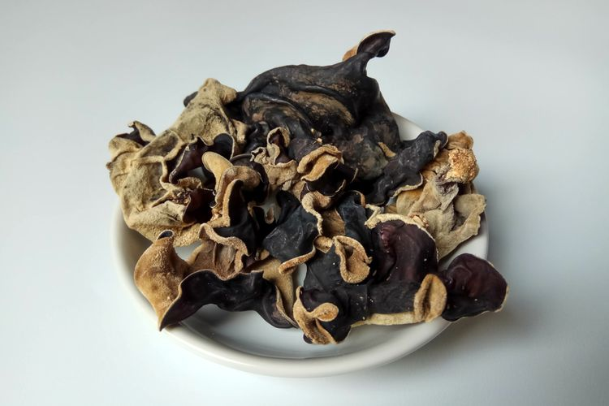
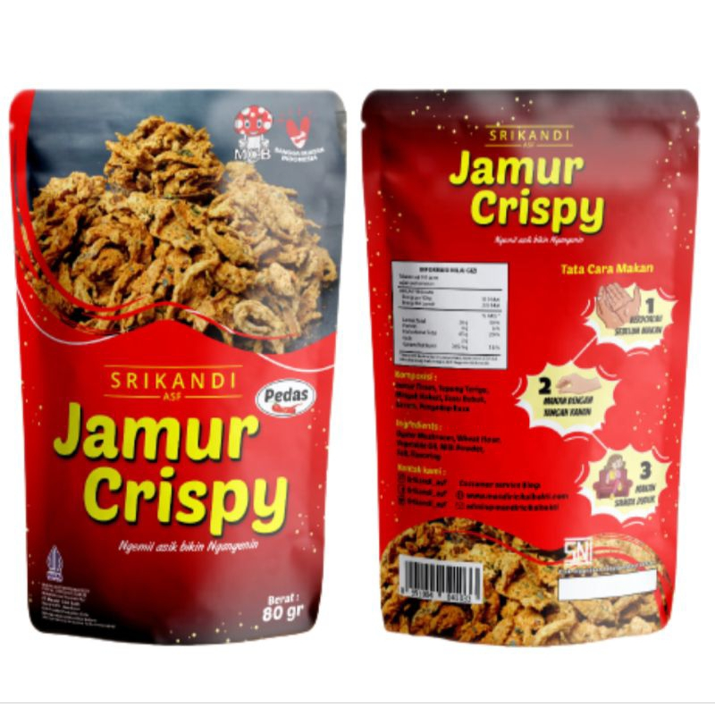
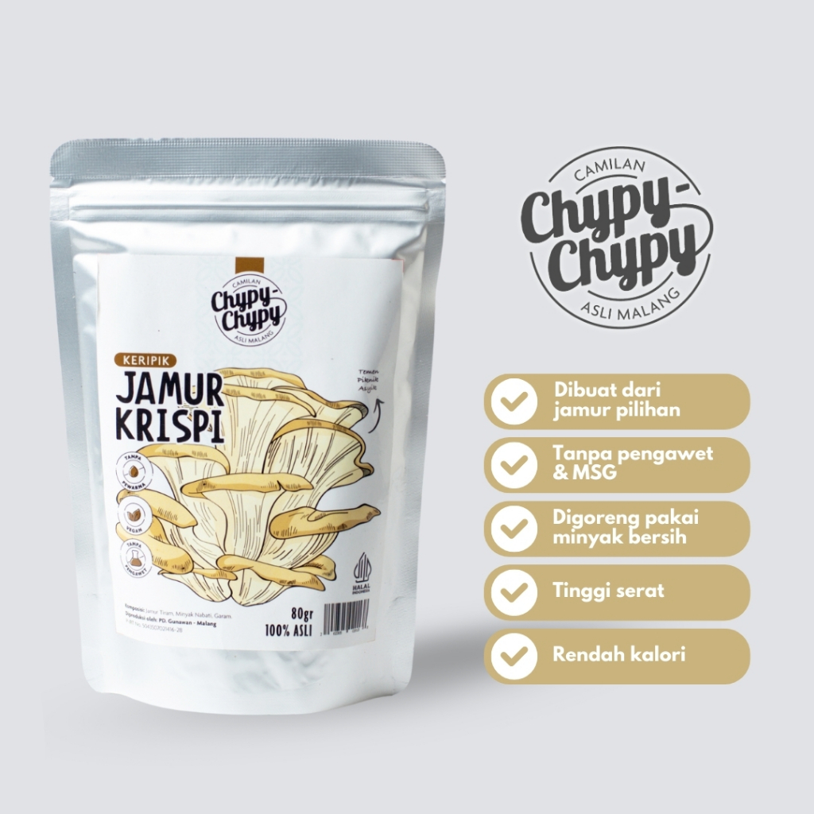
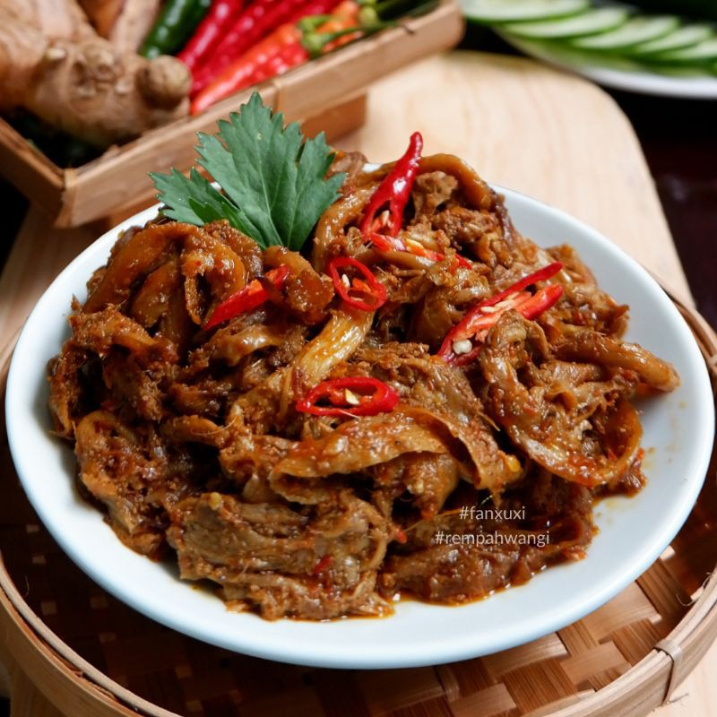
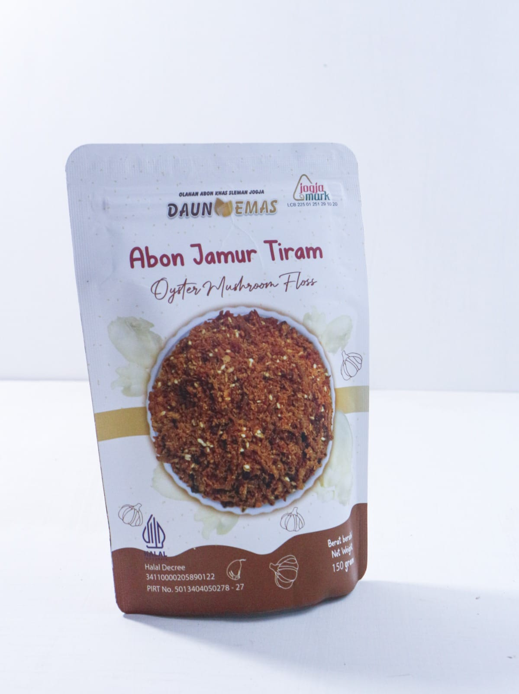

Bahan Pilihan

Jamur Kuping Kering
Diproses secara higienis melalui dehidrasi suhu rendah untuk mempertahankan tekstur kenyal asli dan serat tingginya.
Best Seller

Keripik Jamur Crispy
Cemilan renyah non-MSG yang diolah vakum dengan bumbu rempah alami. Sangat disukai anak-anak hingga dewasa.
Grade Premium

Jamur tiram Kering
Memiliki aroma tajam dan gurih alami yang kuat (umami). Cocok sebagai kaldu sup bintang lima dan masakan oriental.
Organik

Kaldu Jamur Organik
Ekstrak bubuk kaldu alami pengganti vetsin, memberikan rasa gurih murni yang aman dikonsumsi harian.
Nusantara

Rendang Jamur Instan
Olahan rendang kering siap saji berbasis serat jamur tiram pilihan yang kaya rempah padang autentik.
Gurih Pedas

Abon Jamur Tiram
Abon bebas kolesterol dari serat jamur tiram, dimasak dengan rasa gurih pedas yang menggugah selera makan.